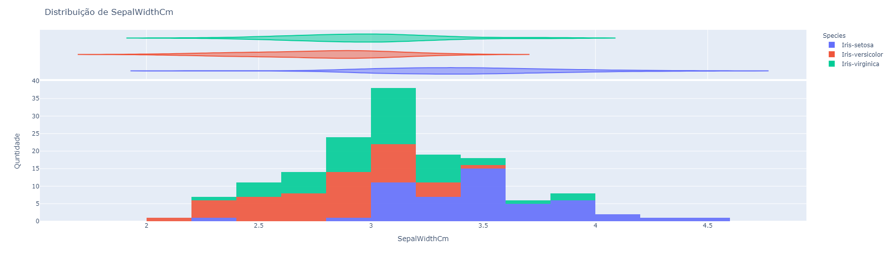
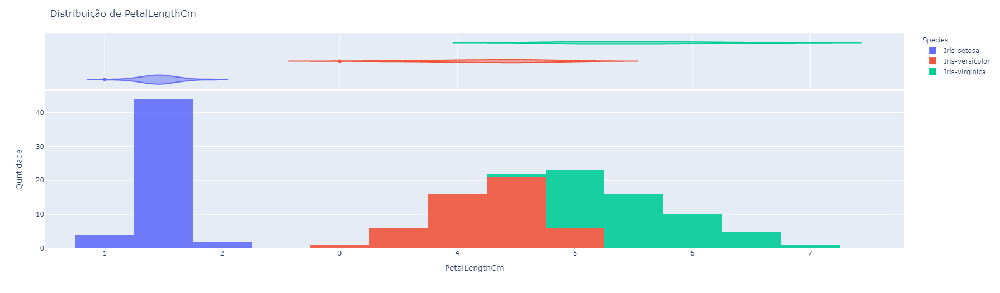

Este componente produz gráficos de distribuição dos dados. Para isso, é utilizada a biblioteca Plotly Express que permite a construção de elementos gráficos interativos. Este componente permir analisar como os valores de um (ou mais) determinado atributo estão distribuídos na tabela de dados.
Espera-se como entrada para o componente uma tabela com colunas que representam valores numéricos, categóricos ou de data. A tabela deve ser de um dos seguintes tipos: Comma-separated values (.csv) ou Excel (.xls, .xlsx).
A seguir são listados todos os parâmetros utilizados pelo componente:
- Atributo alvo (opcional):
feature.
Você visualizará como as demais variáveis se distribuem quando coloridas por este atributo. Este valor é opcional, caso nada seja especificado, todos os pontos dos gráficos terão a mesma coloração.
- Features para visualizar:
feature.
As features selecionadas serão utilizadas para criar gráficos individuais de distribuição de dados de cada uma. Caso nada seja especificado, todas as features serão utilizadas.
- Distribuição marginal:
string.
É a forma de vizualização da sumarização da distribuição dos dados, isto reflete no layout dos gráficos.
O retorno durante a experimentação ajuda o usuário a analisar como os valores para cada atributo se distribuem nos dados da tabela, auxiliando na visualização dos dados de uma maneira geral possibilitando insights para o processo de processamento de dados e treinamento de modelos de aprendizado de máquina.
- Distribuição dos Dados.
Os gráficos gerados pelo componente representam como os dados da tabela estão distribuídos, além disso, quando coloridos por um atributo alvo. Para cada atributo selecionado, é gerado um gráfico único. Cada retângulo, das figuras, representa a quantidade de dados com as características do intervalo representado no eixo horizontal.
- Atributo 1

- Atributo 2
